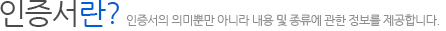
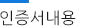
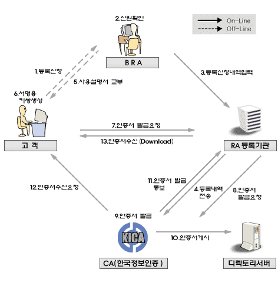

- 인증센터 이해하기
- 인증서비스 안내
- 인증서란?
- 사용자안내서
- 도움말
- 전자서명이란?
- 만화로보는 전자서명
- 
-
 인증서(Certificate)란 PowerNet통합인증센타에서 직원의 신분과 그의 공개키 정보를 보증하기 위해 발급하는 전자문서를 말합니다. 전자결재 및 사내 강력한 보안성이 요구되는 업무에 전자서명 및 인증서를 사용하면 신원확인. 문서의 위.변조, 부인방지등의 효과를 얻을 수 있습니다.
인증서(Certificate)란 PowerNet통합인증센타에서 직원의 신분과 그의 공개키 정보를 보증하기 위해 발급하는 전자문서를 말합니다. 전자결재 및 사내 강력한 보안성이 요구되는 업무에 전자서명 및 인증서를 사용하면 신원확인. 문서의 위.변조, 부인방지등의 효과를 얻을 수 있습니다. - 공개키 기반의 전자서명 기술은 자신이 공개키를 외부에 공개한 후, 이를 이용하여 자신을 상대방에게 인증시키는 기술입니다. 그러나 공개키는 누구나 쉽게 획득할 수 있도록 공개된 장소에 등록되어 있기 때문에 항상 공개키의 위 변조에 대한 문제가 존재하게 됩니다.
- 뿐만 아니라 자신이 획득하고자 하는 공개키가 누구의 공개키인지 확인할 수 있는 수단이 별도로 존재해야만 합니다. 따라서 사용자의 공개키를 그 사용자의 개인정보와 함께, 믿을 수 있는 제3자가 보장해 주는 것을 공개키 인증이라 합니다. 여기에서 이러한 역할을 하는 것이 PowerNet 통합인증센타이며, 통합인증센타가 발급한 사용자의 공개키에 대해 보증하는 전자문서를 인증서라고 합니다.
- 인터넷망 통합인증센타는 자신이 개인키로 사용자의 공개키 인증서를 전자서명 함으로써, 직원 인증서의 무결성 및 진실성을 보장하여 줍니다. 현재 인증서와 관련한 국제 표준으로는 X.509 V3가 있습니다.
- 
-
- 인증서(Certificate)란 PowerNet통합인증센타에서 직원의 신분과 그의 공개키 정보를 보증하기 위해 발급하는 전자문서를 말합니다. 전자결재 및 사내 강력한 보안성이 요구되는 업무에 전자서명 및 인증서를 사용하면 신원확인. 문서의 위.변조, 부인방지등의 효과를 얻을 수 있습니다.
-
- 전자서명용 인증서(Digital Signature Certificate) 상대방에 대한 신원확인(인증), 전자문서의 위.변조여부의 검출(무결성), 전자문서 송.수신 자간의 송.수신사실 여부에 대한 부인방지(부인봉쇄) 목적으로 사용
- 암호화용 인증서(Encryption Certificate) 적법한 송.수신자를 제외한 제3자가 전송중인 메시지를 보지 못하도록 하는데 사용(비밀성)
- 클라이언트 SSL 인증서(Client SSL Certificate) 클라이언트와 서버가 안전한 통신을 하고자 할 때, 서버가 클라이언트의 신원확인을 위해 사용. Form Signing, SSO(Single Sign On)에서 사용
- 서버 SSL 인증서(Sever SSL Certificate) 클라이언트와 서버가 안전한 통신을 하고자 할 때, 클라이언트가 서버의 신원확인을 위해 사용
- S/MIME 인증서(S/MIME Certificate) 전자메일에 전자서명 하거나 전자메일의 암호화를 위해서 사용
- 소프트웨어 배포용 인증서(Code-Signing Certificate) 인터넷과 같은 안전하지 않은 통신망을 통해 소프트웨어를 안전하게 배포할 목적으로 사용하는 인증서로서 Java code, Javascript 등 소프트웨어 코드에 그 제작자가 전자서명을 함으로써, 제작자의 신원확인과 전송과정에서의 소프트웨어의 위.변조를 확인할 용도로 사용합니다
- 인증기관용 인증서(CA Certificate) CA의 확인을 위해 사용하여 클라이언트와 서버의 S/W에서 다른 인증서의 신뢰여부를 검증할 때 사용
- 